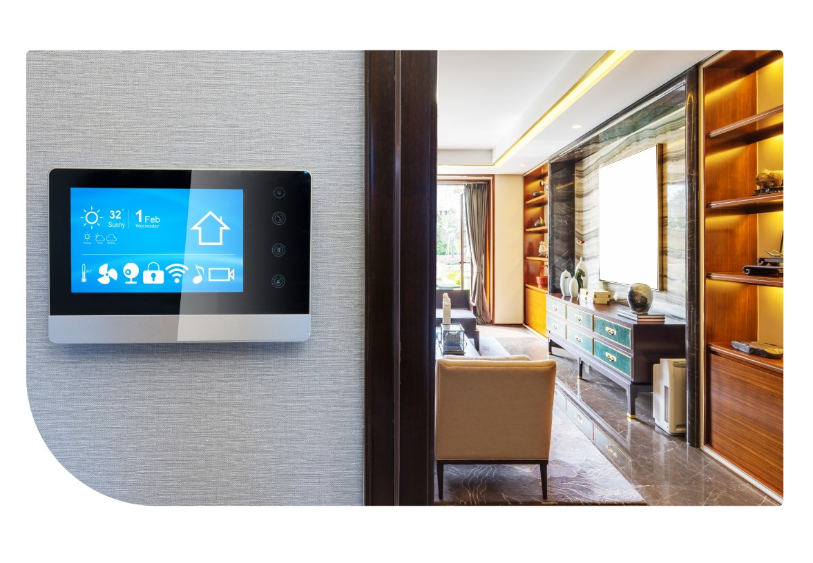
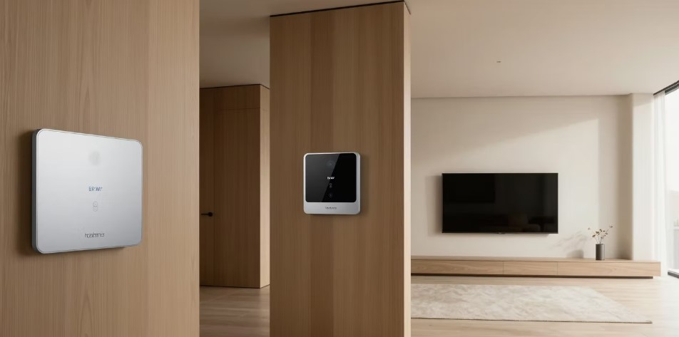

📶
Internet des objets (IoT)
Capteurs connectés pour mesurer la circulation, la température ou les niveaux d’eau.
Les principaux outils numériques au service de la planification et de la gestion urbaine.
Capteurs connectés pour mesurer la circulation, la température ou les niveaux d’eau.
Cartes numériques pour localiser les infrastructures et identifier les risques.
Collecte, visualisation et partage des indicateurs urbains.
Détection d’anomalies et assistance à la décision.
Compteurs, solaire, éclairage LED et régulation des usages.
Applications citoyennes, signalements et accès à l’information.
La protection des données personnelles, la maintenance et la continuité de service doivent être prévues dès la conception.
Découvrez comment interfaces, connectivité et pilotage énergétique peuvent participer à la transformation numérique des villes.

Un écran mural permet de centraliser certaines fonctions de la maison, comme la température, l’éclairage ou la sécurité. Dans un quartier intelligent, ces systèmes peuvent favoriser une meilleure maîtrise de l’énergie.
Les réseaux de communication, notamment les liaisons satellitaires, peuvent améliorer l’accès à Internet dans certaines zones. Une ville intelligente a besoin de connexions fiables pour transmettre les données de ses services.

Des commandes murales permettent de gérer l’ambiance et les appareils d’un logement. Associées à des capteurs, elles peuvent contribuer à limiter les consommations inutiles d’électricité.